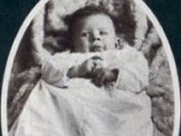
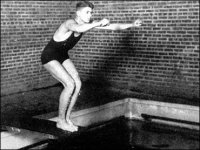
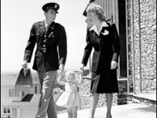
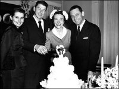
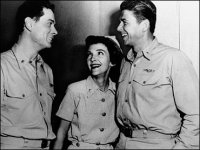
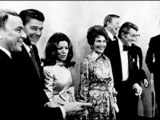
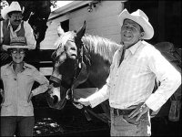
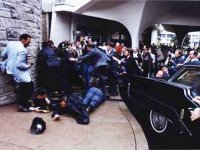
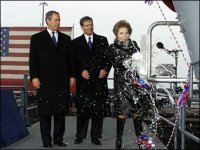

|
|
HOME
MY TRIBUTE QUOTES SPEECHES MEMORIAL LINKS |
EARLIER YEARS:
 --- Ronald's birth in 1911 --- Ronald in family picture (youngest), 1915 --- Ronald as a young teen, 1924 -
 --- Ronald in HS football, 1927 ---- Ronald on diving board, 1930 ---- Ronald in broadcasting, 1937 ---
  --- Ronald going to service, 1942 --- Congressional testimony, 1947 --- Ronald & Nancy marry, 1952 ---
   --- In Hellcats of the Navy. 1957 ----- The Governor of California, 1971 ----- Retired on the Ranch, 1976 ---
PRESIDENCY:

POST PRESIDENCY:

FOR PICTURES OF FUNERAL AND BURIAL, SEE: THE MEMORIAL PAGE


|
|
PRES BUSH EULOGY SR. BUSH EULOGY |
Web Site Copyright © 2004. All Rights Reserved. Web Site by Just-Fix-It Web Services |
MULRONEY EUOLGY THATCHER EULOGY |
 View Guestbook
View Guestbook
free hit counter